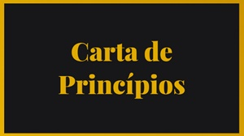

Inspiração
O Nordeste Independente é o movimento defensor da independência nordestina mais antigo ainda em atividade. Pacífico e organizado, examina a possibilidade de emancipação com o intuito de solucionar antigos problemas sociais e econômicos. A concepção do movimento está associada ao contexto social e político do final da década de 1980, diante da ascensão midiática de vários grupos independentistas. Como resposta à insatisfação atrelada à corrupção generalizada, ao atraso econômico e ao subdesenvolvimento, foi fundado no Recife, em 1992, o Grupo de Estudos para o Nordeste Independente (GESNI).
Formado por uma turma de mestrado em economia da Universidade Federal de Pernambuco (UFPE), o grupo foi liderado pelo economista, engenheiro, escritor e professor pernambucano Jacques Ribemboim, responsável pelo levantamento de teses como a do neocolonialismo interno brasileiro. Motivado pelos resultados obtidos, disponibilizou "Nordeste Independente" pela editora Bagaço em 2002, reafirmando a necessidade de secessão como objetivo comum e histórico de todos os nordestinos, essencial para garantir à região Nordeste a possibilidade de negociar com outros países e resolver os seus problemas internos.
O Nordeste Independente foi fundado logo após a ampliação das atividades do grupo anterior, formado por uma significativa comunidade de simpatizantes da causa nordestina. Sustentado pelos argumentos abordados por Ribemboim, o movimento tornou-se conhecido pela atuação virtual e pacífica. Com a revitalização do grupo ao longo da década de 2010, reconfigurou-se administrativamente por meio do estabelecimento de diretórios estaduais e renovação de lideranças, firmando-se pelos campos do ativismo, da cultura e da política através do voluntarismo.
Artigos Relacionados
Carta de Princípios
Nossa carta de princípios, estabelece os valores fundamentais, crenças e objetivos do nordeste independente. Os princípios pelos quais nossas ações e decisões são baseadas.
Leia maisEstatuto Oficial
Nosso estatuto oficial é um documento jurídico que estabelece as regras, normas e regulamentos que regem nossa instituição. Define nossa estrutura organizacional, os direitos e deveres dos membros. Servindo como base legal para o funcionamento da entidade.
Leia maisPerguntas e Respostas
Veja algumas dúvidas mais comuns entre nossa comunidade. Ao responder às perguntas frequentes, buscamos compartilhar soluções para nossa região com base em estudos aprofundados.
Leia mais